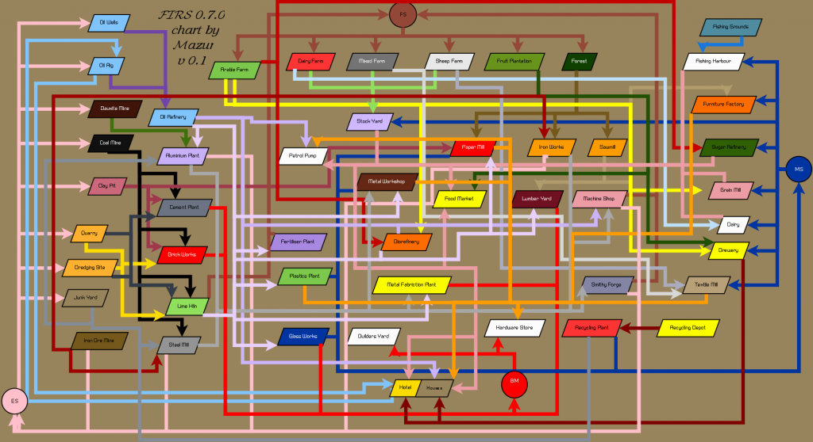
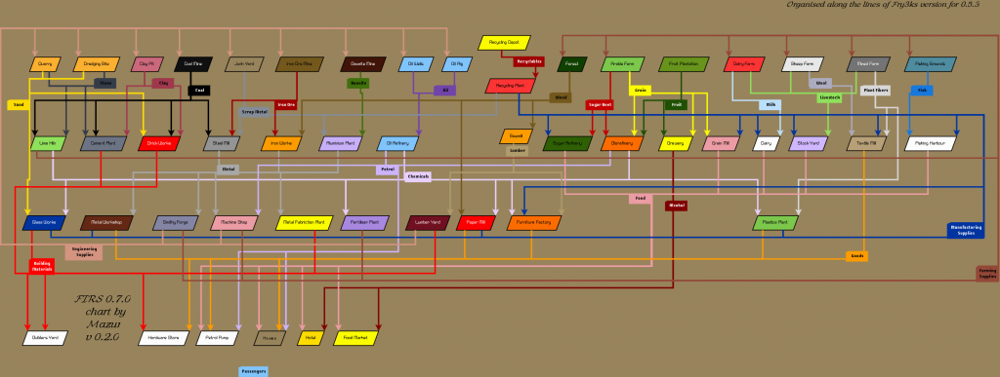

FIRS industry and cargo chart.
Since I usually get a bit overwhelmed when playing a FIRS game, by the complex cargo flows, I decided to make a chart of these flows. Here is the first result. Comments and suggestions for improvements are most welcome, but BE SPECIFIC. If you post something like: “I would prefer it cleaner, clearer.” I can do nothing with it. Firstly, because different people mean different things with such a statement, and secondly, because I can not look into your head. Things that need no suggestion, because I will do them already:, or not do at all:
- Insert tags named the cargoes, as I already intend to add those.
- The same goes for OTTD industry icons.
- Use other or different colours, as I copied these from the OpenTTD chain widgets, I think that’s helpful.


FIRS cargo chart


FIRS 0.7.0 cargo flow chart v 0.2.0
Categories: Community News
V453000 January 27, 2012 11:14
Good effort! I believe it is definitely going to be useful for someone, but I think that when making a plan or something, you usually want to focus on one thing – for example having all food pickups together, or having all industries accepting the same cargo together, and so on. Therefore those are the things that one would like to highlight in the scheme and eventually organize the scheme around that, but there is nothing to do about it. This scheme of course provides it as well. I just wanted to say that it is definitely good, but I just think that for overall planning one still has to make his own 🙂
Mazur January 27, 2012 11:18
Indeed, but what I have is, that when planning I get hopelessly lost trying to disentangle the various cargo flows through the chain widgets, so I need something like this to make my own cargo choices in a FIRS game. I hope this will help myself and others to do just that.
M.
Mazur January 27, 2012 12:41
Ammler wondered on #openttdcoop how I made this chart.
I used Dia, a diagram drawing program on any main platform, and I used gcolor2 on Linux to get all the cargo colours from the game itself. The industry colours I could retrieve from the NewGRF itself, after a suggestion by planetmaker. One grep+sed+sort took care of that. 😉
The diagram file is (after some more editing) at: FIRS.dia and the colours are in FIRS.rgb.
Hope this works.
M.
Thraxian January 27, 2012 13:36
Out of curiosity, why create a new chart, when there’s already one at http://wiki.openttd.org/FIRS#Cargo_Chart ? Is that chart lacking one or more industries or cargo types, are we trying to provide an alternate view, or were we simply not aware that such a chart already existed?
Nice illustration, by the way. If I were to provide any constructive criticism, it would be to try making the lines a little thinner (so they don’t get all confusing in the middle), and see if there is any way to get rid of all the crossings in the center of the diagram – it gets really cluttered there. Perhaps try to make all the lines go in the same direction (left-to-right, or top-to-bottom), except where needed. Having lines come from all sides can be a bit overwhelming.
Mazur January 27, 2012 14:12
As to your first question, I made it because a. I was not aware of that chart, b. I could not find that chart, and c. I was not aware of that chart.
As to your suggestions: good point, I made them this thick originally to see them more clearly while I was making the connections, but now they’re there, I can make them thinner again. About getting rid of all the crossings: that was why I posted it, I hoped people would look at it and say things like: If you move industry x to that point, and swap a and b, and route cargo y along the other side of z, it all gets much less cluttered. After making this in two days, one gets a little blind to even the most obvious simplifications.
The cargo chart you just mentioned it what I was actually aiming at: simple and clear. It lacks only a few things: Building Materials delivery, Food Market and Hotel.
Oh, and, more importantly, Alcohol. And it does not use the same colours as OpenTTD. Lastly, using the OTTD industry graphics would be nicer.
Mazur.
Mazur January 29, 2012 12:07
Inspired by Fry3ks version for 0.5.3 and Thraxians comments, I made a new version:
v0.2.0, which I appended to the post, as I have a dynamic IP address.
Mazur
ogga April 9, 2013 03:46
Mazur’s post inspired the creation of an updated chart for FIRS 1.0.
This is what emerged after couple of days thinking about how to organise it.
It’s rather differently laid out but we hope you’ll see the logic.
Passengers and ‘houses’ have deliberately been excluded…
For now, I’ve left it as simple as possible –
however, it’s quite concise it may be amenable to the inclusion
of cargo weight, volume, value, and/or industry multiplier, or whatever.
V453000 April 9, 2013 07:36
Very messy on the first sight, probably graphically not the most fortunate, I would try to put more emphasis on the industry “groups” like giving farms more clear box in which clearly are farms, etc.
I would also try to separate goods producing, and supplies producing tertiary industries into 2 groups similarly as above, as it is basically the way you pick when choosing which primary supply do you send where.
In general it is quite nice, not exactly sure how to majorly improve it, there will always be mess as there is so many things and connections so I would leave major improvements for next tries instead of improving this :P.
but there is a bigger problem…
FIRS industries sometimes randomize which cargo they produce. This definitely happens with Recycling Plant and I think also with Ports (which I do not see in your chart; I might be blind though)
Update: FIRS docs mention Ports to be only in economies and RP to produce what you have in the chart.